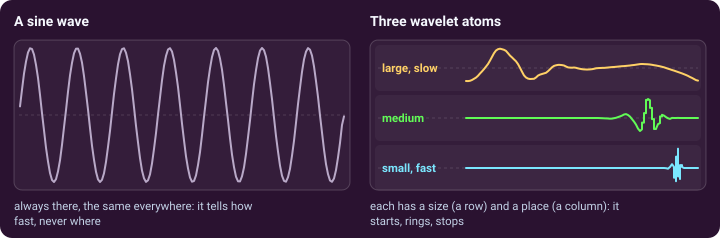
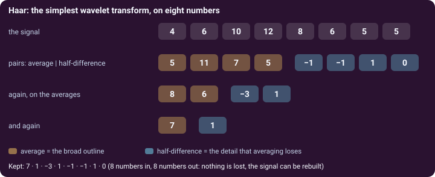
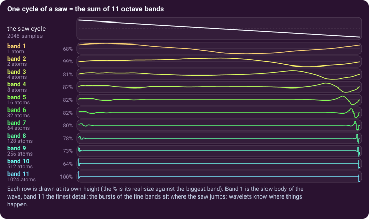

The idea · wavelets
A sound cut into sizes and places
OktoWave rests on one idea: a sound can be cut into tiny waves called wavelets, and an oscillator can be made of them.
A sine tells how fast, never where
The classic way to analyse a sound is to cut it into sine waves. A sine runs for ever, the same everywhere: it tells which frequencies a sound holds, not where in the wave they happen. A wavelet is a tiny wave that starts, rings and dies away. Stretch it and it gets bigger and slower; slide it and it moves. Each stretched and slid copy is an atom.

Cutting a signal: Haar on eight numbers
The simplest cut is Haar. Replace every pair of numbers by their average and by half their difference; do it again on the averages, and again. Eight numbers end as one average and seven details at three sizes (4, 2 and 1). Nothing is lost: that is the discrete wavelet transform. Haar's atom is a step; the others (Daubechies, Symlet, Coiflet) are smoother.

One cycle, eleven bands
An OktoWave oscillator keeps one cycle of its tone as 2048 numbers and cuts them into 11 octave bands. Band 1 is one large atom, the slow body of the wave; each next band has twice as many atoms, half the size, up to band 11 with 1024 fine atoms (band b holds roughly the harmonics 2b−2 to 2b−1 of the note). Every atom has a size (its band) and a place (its position in the cycle). Added together they give the cycle back exactly. The SCALOGRAM of the panel draws them as rows (sizes) and columns (places).

An oscillator made of atoms
Once a cycle is a pile of atoms, you can do what no ordinary oscillator allows:
- Turn a band up or down: a filter on sizes (the SCALE FILTER), or eleven drawbars.
- Keep only the strongest atoms (SPARSITY): a simpler wave, a stranger tone.
- Treat one part of the cycle differently: atoms have a place, so the POSITION window filters one part of the wave only.
- Choose the atom: Haar is blocky, Daubechies 20 smooth; MORPH slides from one wavelet to another.
- Move any of it: envelopes and LFOs can sweep the cutoff, the window, the sparsity or the wavelet itself.
The cycle is then played like a wavetable through a conventional filter, envelopes and effects. A1 and A2 start from a classic wave and take bands away (subtractive); B1 builds the sound band by band (additive).